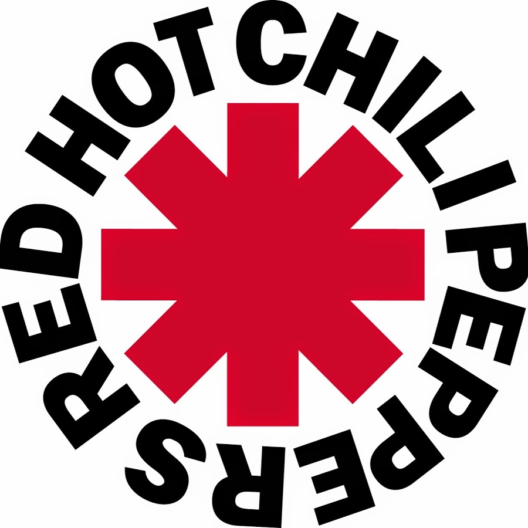

Red Hot Chili Peppers
Red Hot Chili Peppers are an American rock band formed in Los Angeles in 1983, comprising vocalist Anthony Kiedis, bassist Flea, drummer Chad Smith, and guitarist John Frusciante. Their music incorporates elements of alternative rock, funk, punk rock, hard rock, hip hop, and psychedelic rock. Their eclectic range has influenced genres such as funk metal, rap metal, rap rock, and nu metal. With over 120 million records sold worldwide, Red Hot Chili Peppers are one of the best-selling bands of all time. They hold the records for most number-one singles (14), most cumulative weeks at number one (85) and most top-ten songs (25) on the Billboard Alternative Songs chart. They have won six Grammy Awards, were inducted into the Rock and Roll Hall of Fame in 2012, and in 2022 received a star on the Hollywood Walk of Fame.
Red Hot Chili Peppers were formed in Los Angeles by Kiedis, Flea, guitarist Hillel Slovak and drummer Jack Irons. Due to commitments to other bands, Slovak and Irons did not play on the band's 1984 self-titled debut album, which instead featured guitarist Jack Sherman and drummer Cliff Martinez. Slovak rejoined for their second album, Freaky Styley (1985), and Irons for their third, The Uplift Mofo Party Plan (1987). Irons left after Slovak died of a drug overdose in June 1988.
With new recruits Frusciante and Smith, Red Hot Chili Peppers recorded Mother's Milk (1989) and their first major commercial success, Blood Sugar Sex Magik (1991). Frusciante was uncomfortable with their newfound popularity and left abruptly on tour in 1992. After a series of temporary guitarists, he was replaced by Dave Navarro, who appeared on the group's sixth album, One Hot Minute (1995). Although successful, the album failed to match the critical or popular acclaim of Blood Sugar Sex Magik. Frusciante and Kiedis struggled with drug addiction throughout the 1990s.
In 1998, following Navarro's departure, Frusciante rejoined the band. Their seventh album, Californication (1999), became their biggest commercial success, with 16 million copies sold worldwide. By the Way (2002) and Stadium Arcadium (2006) were also successful; Stadium Arcadium was their first album to reach number one on the Billboard 200 chart. Frusciante left again in 2009 to focus on his solo career; he was replaced by Josh Klinghoffer, who appeared on I'm with You (2011) and The Getaway (2016), before Frusciante rejoined in 2019. They released their 12th and 13th albums, Unlimited Love and Return of the Dream Canteen, in 2022